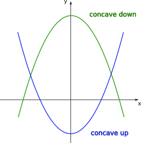
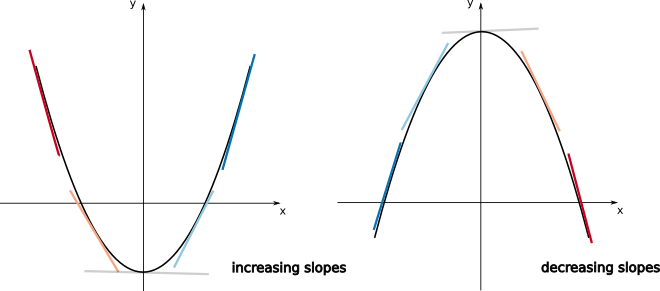
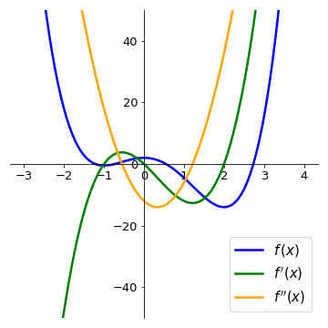

07 - Analysing change, continuously (Part 2)#
In many different contexts we may be interested in finding the maximum or minimum values a given function may assume. This process is referred to as optimization.
In Ecology, some of the most common uses for optimization methods are:
1 - Statistical estimation and inference: optimizing the likelihood of a model and its parameters being true, for a given set of observations.
2 - Resources management: finding a balance between different wildlife and economic priorities (market, legal, natural constraints)
3 - Optimality theory: how can the behavioural or life-history trade-offs result in optimal strategies for different organisms
Extreme values of functions#
For a given function \(f(x)\) that is continuous in an interval \(a \le x \le b\), there will always be a global maximum and a global minimum, points at which the function assumes its maximum and minimum values in the interval.
A function \(f(x)\) presents a local maximum value if for a given vicinity of the point \(x_0\), \(f(x_0)\) is greater than all the other \(f(x)\) for \(x\) in this vicinity. The analogous definition can be made for a local minimum value when \(f(x_0)\) is smaller than all the other \(f(x)\) in the vicinity. Local minima and local maxima constitue the local extrema for \(f(x)\), and with the set of all extrema we can find the global maximum and the global minimum.
An important result is that, if the function \(f\) has a local extremum at a given point \(x=c\) in that interval (\(a<c<b\)) and the derivative of the function exists at that point (in other words, if \(f'(c)\) is well defined), then we will have:
\(f'(c)=0\)
Warning
Thus the points \(x=c\), for which \(f'(c)\), will constitute candidates for local extrema, and will have to be evaluated under other sets of conditions. Also important to have in mind that point for which the derivative is not definided (kinks or discontinuities) may also constitute local extrema (see on the first figure).
In general, when searching for local extrema, we have to adopt the following rules:
Do not assume points \(x\) for which \(f'(x) = 0\) are extrema. They are candidates.
Check points where derivative is not defined.
Check endpoints of domain.
Tip
If possible, create a plot. Visuals are powerful tools and can help verify whether calculations have been done correctly.
Monotonicity and concavity#
Imagine a function \(f(x)\) defined in a given interval \(a \le x \le b\). For every \(x_1\) and \(x_2\) in this interval, if \(x_{2} > x_{1}\) implies that \(f(x_{2}) > f(x_{1})\) then the function is increasing in this interval. If on the other hand, \(x_{2} > x_{1}\) implies that \(f(x_{2}) < f(x_{1})\) then the function is decreasing in this interval. This can be graphically shown as:

Note
Since we are using the stric inequalities (”\(>\)” or “\(<\)”) it can be added that the function is monotonic, or monotonically increasing or decreasing. If we had \(x_{2} > x_{1}\) implying that \(f(x_{2}) \ge f(x_{1})\) (or \(f(x_{2}) \le f(x_{1})\)), the function would be non-decreasing (or non-increasing).
Now suppose that \(f\) is well-behaved in a given interval \(a \le x \le b\) (in mathematical terms, we say: \(f\) is continuous and differentiable in \((a,b)\)), then an important results is that
In other words, if the derivative of function \(f\) is positive (negative) for every point \(x\) in a given interval then the function is increasing (decreasing) in this interval.
Example
Let us calculate the intervals where the function \(f(x) = x^{3} - \displaystyle\frac{3}{2}x^{2} - 6x + 3\) is increasing and decreasing. Since \(f(x)\) is continuos and differentiable for all real values of \(x\) (remember that all polynomial functions are well-behved), we can use the first derivative test:
and we see that \(f'(x)\) has roots in \(x=-1\) and \(x=2\). Since \(f'(x)\) is a polynomial of degree 2 with the coefficient of the leading term positive, it is concave up. From this, we can conclude that:
The following plot shows the function \(f(x)\) and its derivative. Compare the intervals where the derivative is positive (negative) with the intervals where the function \(f(x)\) is increasing (decreasing).

When we discussed polynomials of degree 2, depending on the sign of the coefficient of the leading term, we had the two cases:
Let us now generalise the notion of concavity for any arbitrary function. Suppose \(f(x)\) is differentiable in a given interval \(a \le x \le b\) (in other words, the derivative \(f'(x)\) is well-defined for every point in this interval). Then we have the following results:
This means that if for a given function \(f(x)\) the slopes of the tangent lines are increasing in a given interval of \(x\), in this interval the function should resemble an “upwards U-shape”. If on the other hand, the slopes of the tangent lines are decreasing in this interval, the function should resemble a “downwards U-shape”. This can be visualised on the plots below.
If the function \(f\) is twice differentiable in \(a \le x \le b\) (\(f''(x)\) is well-define for \(a \le x \le b\)), we can use the last two results to find a general criterium for concavity. This will be given by:
Example
If you have a population curve, these tools will help you analyze questions such as ‘How fast is the population growing?’ ‘Is the growth accelerating?’ or ‘Are any of these factors changing over different periods?
Example
Let us analyse the function \(f(x) = x^{3}-\displaystyle\frac{3}{2}x^{2}-6x+3\) again. We have:
The function f’’(x) has a root in \(x=\displaystyle\frac{1}{2}\). Since its slope is positive, we have:
On the plots below, compare the intervals where the second derivative is positive (negative) with the intervals where the function \(f(x)\) is concave up (concave down).

Finding extrema#
Back to our strategy for finding maxima or minima of functions, we first determine the set:
find all points \(c\) for which \(f'(c) = 0\) or all point \(c\) where \(f'(c)\) does not exist. These are called critical points.
find endpoints of domain of \(f\).
Additionally, if \(f\) is twice differentiable (in some interval containing \(c\)):
If \(f'(c) = 0\) and \(f''(c) < 0 \implies c\) is a local maximum (since the function is concave down)
If \(f'(c) = 0\) and \(f''(c) > 0 \implies c\) is a local minimum (since the function is concave up)
Example
Let us analyse the function \(f(x) = \displaystyle\frac{3}{2}x^{4}-2x^{3}-6x^{2}+2\), and find its local extrema. We have:
Since this is a polynomial function, the derivative is well-defined for all points. Also, for the critical points (roots of \(f'(x)\)) we have \(x=0\), \(x=-1\), and \(x=2\). Calculating the value of the second derivative at the critical points:
Now we can check on the plot of \(f(x)\) that we have successfully determined the local extrema.
Inflection points#
As we saw before, given a function \(f(x)\), for some values of \(x\), there might be a change in the concavity of the function:

The points \(x\) for where the function changes its concavity are called inflection points. If \(f\) is twice differentiable and \(c\) is an inflection point, then \(f''(c)=0\).
Inflection points are the points where the function is (locally) steepest. It therefore helps us answer questions like when the growth/decline was strongest.
Note
Note again that the points \(x=c\) where \(f''(c)=0\) are only candidates for inflection points. See that if \(f(x)=x^{4}\), \(f''(x)=12x^{2}\). Then, \(f''(0)=0\), but \(x=0\) is not an inflection point of \(f\).
After calculating the candidate points \(x=c\), if the concavities of the function (given by the sign of the second derivative) to the left and to the right of \(c\) change, then \(c\) is an inflection point.
Example
Consider the Holling Type III functional response
where \(f(N)\) is prey consumption rate per predator, \(N\) is the prey population density, \(a\) is the attack rate, and \(h\) is handling time. Let us check if this function presents any inflection point. We have:
\(\begin{align}f'(N) &= \frac{2aN(1+ahN^{2})-aN^{2}(2ahN)}{(1+ahN^{2})^{2}} \\ &= \frac{2aN}{(1+ahN^{2})^{2}}\end{align}\)
\(\begin{align}f''(N) &=\frac{2a(1+ahN^{2})^{2}-2aN[2(1+ahN^{2})\cdot2ahN]}{(1+ahN^{2})^{4}} \\ &=\frac{2a(1+2ahN^{2}+a^{2}h^{2}N^{4})-2a[4ahN^{2}+4a^{2}h^{2}N^{4}]}{(1+ahN^{2})^{4}} \\ &=\frac{2a(1-3ahN^{2})}{(1+ahN^{2})^{3}}\end{align}\)
See that the function \(f''(N)\) has two roots: \(N=-\sqrt{\displaystyle\frac{1}{3ah}}\) and \(N=\sqrt{\displaystyle\frac{1}{3ah}}\). Since \(N\) is a population density, it only makes sense to analyse \(N \ge 0\). It is also possible to show that:
This means that we have a change of concavity at the point \(N=\sqrt{\displaystyle\frac{1}{3ah}}\) and thus this is and inflection point of this curve.
Analyse how the function \(f(N)\) changes with \(N\).

How does this function compares with the Holling type II functional response?
Tip
For the intervals where the function is concave up you can also think of it as representing “accelerated change” of that function (since the first derivative, the “velocity” is increasing), while the intervals where it is concave down represent “deccelerated change” of the function. Understanding this can be particularly important if you function has a specific biological meaning, as in the previous example.
Series expansions#
From the formal definition of a derivative
which means that if \(x\) is sufficiently close to \(a\), the average rate of change is sufficiently close to the value of the derivative at that point. From the previous approximation, we have:
which provides a linear approximation of \(f(x)\) around \(a\) (see that if \(\alpha= f(a)\) and \(\beta=f'(a)\), both constants, then \(f(x) = \alpha+\beta(x-a)\), which can easily be arranged on the form \(y=mx+b\)).
Example
One way of trying to make the approximation better is to add terms of higher order of \(x\). Suppose we want to approximate the function \(f(x)\) at point \(a\) by a given polynomial of degree \(n\)
so that the derivatives of \(f(x)\) and \(P(x)\) are the same at \(x=a\):
But for the polynomial, we have:
where \(n! = n\cdot(n-1)\cdot(n-2) \cdots 3 \cdot 2 \cdot 1\) is the factorial of \(n\).
Thus, by making derivatives of \(f(x)\) and \(P(x)\) equal at \(x=a\), we obtain:
The polynomial with these coefficients is called Taylor polynomial of degree \(n\) at \(x = a\):
Example
To find approximation of degree 3 for \(f(x)=e^{x}\), at \(x=0\), we have:
Thus,
See how the approximation to the function \(f(x)=e^{x}\) at \(x=0\) gets increasingly better when more terms are added to the polynomial.

Example
For the function \(f(x)=\displaystyle\frac{1}{1-x}\ (x\neq1)\) at \(x=0\), we have:
Thus the Taylor polynomial of degree \(n\) will be:
For some functions, the approximation \(f(x)=P_n(x)\) at a given reference point \(x=a\) can be made increasingly better by adding more terms to \(P(x)\), so that in the limit \(n\rightarrow \infty\) the Taylor polynomials (called Taylor series in this limit) for the functions \(e^{x}\), \(\mbox{sin}(x)\), \(\mbox{cos}(x)\) converge exactly for all values of \(x\). For other functions, such as \(\mbox{ln}(1+x)\) and \(\displaystyle\frac{1}{1-x}\), there is a restricted range of values of \(x\) for which the approximation can be made better by adding terms.
We have the following approximations by Taylor series, with ranges in \(x\), at \(x = 0\):
Knowing the Taylor series often gives insight into the properties of a function.